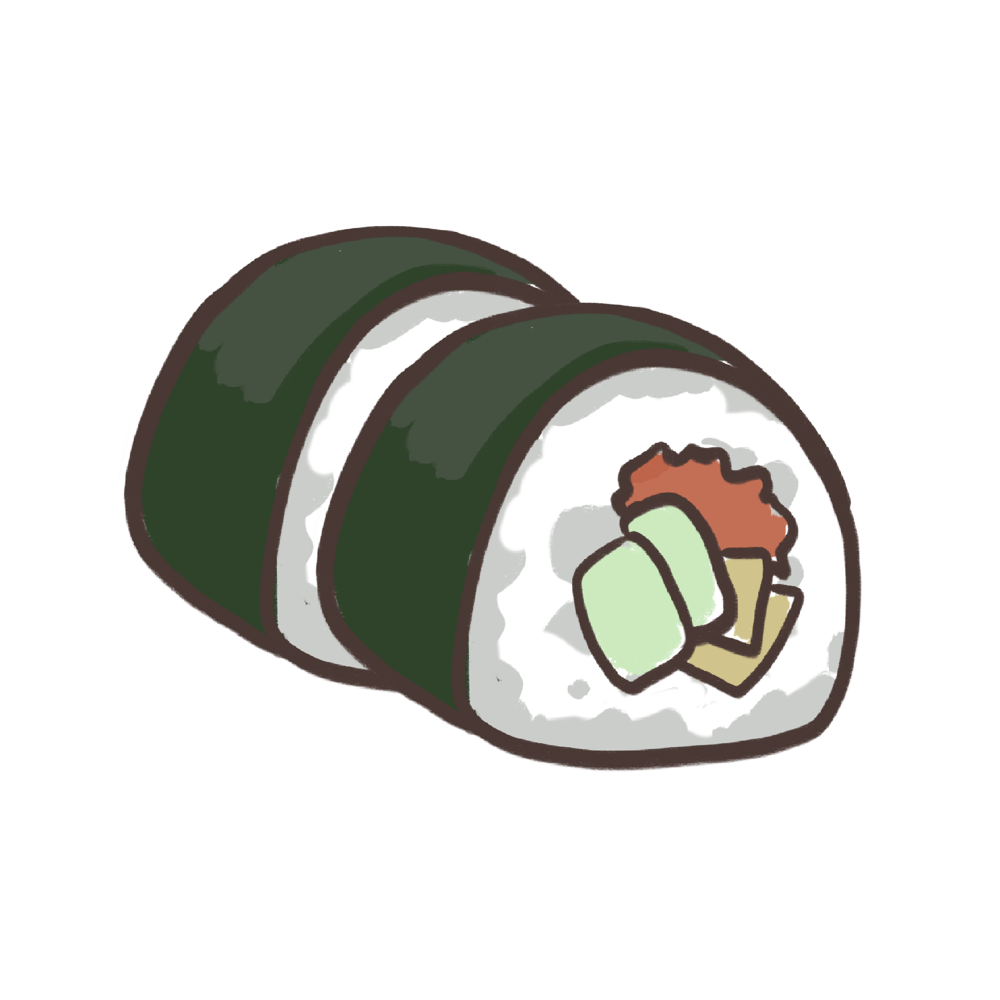

Ingredients
- Sushi rice......114 g
- Nori......4 pc
- Rice wine vinegar......2 tbsp
- Caster sugar......1 tbsp
- Mayonnaise......2 tbsp
- Cucumbere......1
- Avocado......1
- Carrot......1
- Soy sauce......any
Sushi (すし, 寿司, 鮨, 鮓) is a Japanese dish of prepared vinegared rice (鮨飯, sushi-meshi), usually
with some sugar and salt, plus a variety of ingredients (ねた, neta), such as vegetables, and any
meat, but most commonly seafood (often raw but can be cooked). Styles of sushi and its
presentation vary widely, but the one key ingredient is "sushi rice", also referred to as shari
(しゃり), or sumeshi (酢飯).
How to cook:
| 1. | Rinse and drain rice 3 times or until water runs clear. Place in a sieve over a bowl. Set aside for 10 minutes to drain. |
| 2. | Place rice and 1 1/2 cups cold water in a saucepan over medium heat. Cover. Bring to the boil. Reduce heat to low. Simmer, covered, for 12 minutes or until water has absorbed. Remove from heat. Stand, covered, for 10 minutes. |
| 3. | Meanwhile, place vinegar and sugar in a microwave-safe jug. Microwave on high (100%) for 30 seconds. Stir to dissolve sugar. Transfer rice to a large ceramic dish. Using a spatula, stir to break up lumps. Slowly add vinegar mixture, lifting and turning rice, until rice has cooled. |
| 4. | Place 1 nori sheet, shiny-side down, on a sushi mat. Using damp fingers, spread 3/4 cup rice over nori, leaving a 2cm strip at 1 short end. Spread 2 teaspoons mayonnaise over centre of rice. Arrange one-quarter cucumber, avocado and carrot over mayonnaise. Using the sushi mat, roll up firmly to form a roll. Cut into 6 slices. Repeat with remaining nori sheets, rice, mayonnaise, cucumber, avocado and carrot to make 24 pieces. Serve with soy sauce. |